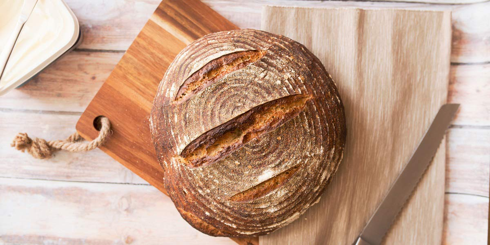

Olive Bread
Recipe Specification
Ingredients List
| Ingredients | Quantity |
|---|---|
| Strong White Flour | 700g |
| Dried Yeast | 7g |
| Olive Oil | 15ml |
| Table Salt | 1 tsp |
| Caster Sugar | 1 tsp |
| Pitted Black Olives | 1 tsp |
| Medium Egg | 1x1 |
Yield: 1 Loaf
Preparation
- Sift flour and add yeast, sugar and table salt.
- Add Olive Oil and crumble into flour.
- Make a well in the middle of the flour and add 430ml of 50’C water.
- Mix flour into water until dough comes away from the side of the bowl.
- Tip dough on to floured work surface and knead for 10 minutes until dough become elastic.
- Put dough into oiled bowl, clingfilm loosely and allow to prove for 2 hours in a warm place.
- Line baking tray with greaseproof paper.
- Once dough has doubled in size, tip out on to floured work surface, knock air out and incorporate pitted black olives.
- Shape dough into smooth ball and place on baking tray. Dust top with flour and place tray in large polythene bag. Allow to prove for 30-40 minutes in a warm place.
- Crack and beat egg.
- Remove tray from polythene bag and slash top of dough 3 times before brushing surface with egg.
- Pre-heat Oven to 200’C.
Cooking Instructions
- Place Tray on middle shelf of the oven and bake for 30-40 minutes.
- Place on a wire rack to cool.

Serving Suggestions
Bread can be enjoyed with Olives, Olive oil, Tapenade, Humous and Pate.
Storing instructions
Once cool, Place in bread bin and consume with 5-7 days.
Reheating Instructions
Slice bread and toast.